| 1. 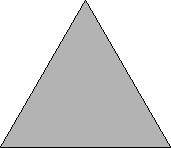 | 3. 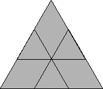 | 4. 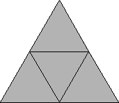 | ||
| s = 1 Trivial. | s = 3/2 = 1.5 Trivial. | s = 2 Trivial. |
| 6. 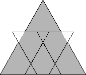 | 7. 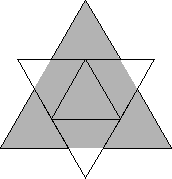 | 8. 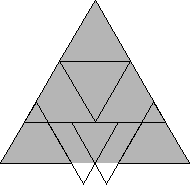 | ||
| s =7/3 = 2.333+ Found by David Cantrell in August 2002. | s = 5/2 = 2.5 Found by Erich Friedman in 1999. | s = 8/3 = 2.666+ Found by David Cantrell in August 2002. |
| 9. 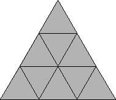 | 11. 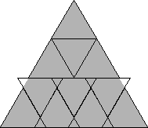 | 12. 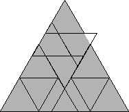 | ||
| s = 3 Trivial. | s = 13/4 = 3.25 Found by Erich Friedman in 1999. | s = 10/3 = 3.333+ Found by Erich Friedman in 1999. |
| 13. 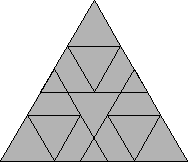 | 14. 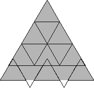 | 15. 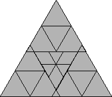 | ||
| s = 7/2 = 3.5 Found by Erich Friedman in 1999. | s = 11/3 = 3.666+ Found by David Cantrell in August 2002. | s = 15/4 = 3.75 Found by Erich Friedman in 1999. |